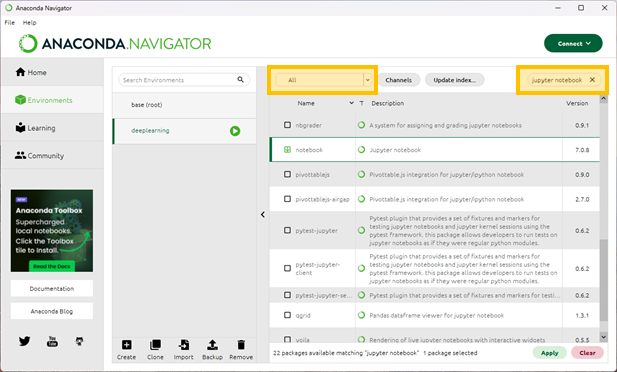
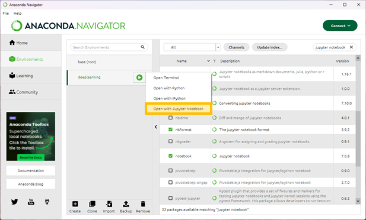
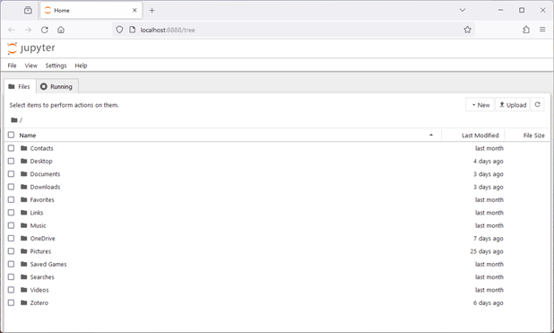

Pre-Meeting Preparation
Deep Learning Community of Practice
Introduction
Hello Everyone!
I think everyone who will fill out the survey has and it looks like Tuesdays from 11-12 fits the most people’s schedules. Our first meeting will be Tuesday May 7th at 11-12am.
I’ve included information on preparing for the first session below and please let me know if you have any questions.
Best, Daniel
Logistics: I have reserved room 219a in Curtis Hall for those attending in person and there will be a videochat link in the invitation for those attending virtually. I’m looking into recording the meetings and making them internally available for anyone who can’t make it, but I can’t guarantee I’ll have this sorted.
Preparing for our first meeting: Before we meet I would like everyone to write down your answers to the following questions.
- Are you interested in the low-level details of deep learning or mostly high-level application?
- Where do you see yourself using deep learning? In the lab or for personal use?
- After learning these topics what goals will you be better situated to achieve?
Closer to the date of I will send out some instructions on the software we’ll be using. Please follow these setup instructions.
Our first meeting will be composed of three parts. First, I’ll give a brief introduction. Next, we’ll talk about everyone’s answers to the questions above. The goal of this is to help people with similar uses in mind and interests find each other – so over time we can grow from a learning group to a community of practice. Finally, we’ll talk about software and setup to fix any issues for the next meeting.
Future meetings: Beyond this first meeting we’ll have some lecture and exercises that we’ll complete in between sessions. In the sessions we’ll talk though the exercises and what people found challenging or interesting.
The material will initially focus on building networks from the ground up so when we start using research grade libraries how they work isn’t a black box. After a few sessions we’ll take stock and adjust course as needed.
Setup Instructions
Hello Everyone,
Here are the setup instructions. It should take only a few minutes to get set up, but please go ahead and do this before our kickoff meeting next week. That way we can address any issues that arise.
To start out with we’ll use python through jupyter notebooks. If you’ve worked in the R ecosystem, these are similar to Rmarkdown or quarto documents that let you mix notes and equations in with your code. There are two options you can use. The easiest is to use “Google Collab” which will take care of the setup for you. The hardware your notebook will not be especially powerful but that is perfectly fine for starting out.
Option 1: • Create a google account if you don’t have one. • Keep this url handy for next week https://colab.research.google.com/ Option 2: • Install Anaconda https://docs.anaconda.com/free/anaconda/install/ or miniconda https://docs.anaconda.com/free/miniconda/index.html • Using either the graphical interface or the command line https://conda.io/projects/conda/en/latest/user-guide/tasks/manage-environments.html# create an environment and ensure that at least Jupiter is installed https://anaconda.org/anaconda/jupyter
Assuming you opt for option 2 with the graphical user interface, select environments

Next select create

Select python and choose a name for your environment. (Don’t worry about the version of python just now, we’ll change it when or if it becomes an issue)

Now we need to install jupyter notebook. By default anaconda displays the installed packages so we’ll need to switch to all or uninstalled before searching for it. Find it, check the box and press apply below.

You may see a pop up requesting that you install notebook’s dependencies.

After the installation if finished now you can right click on the play symbol and launch a jupyter notebook.

This should automatically launch in your default browser.
